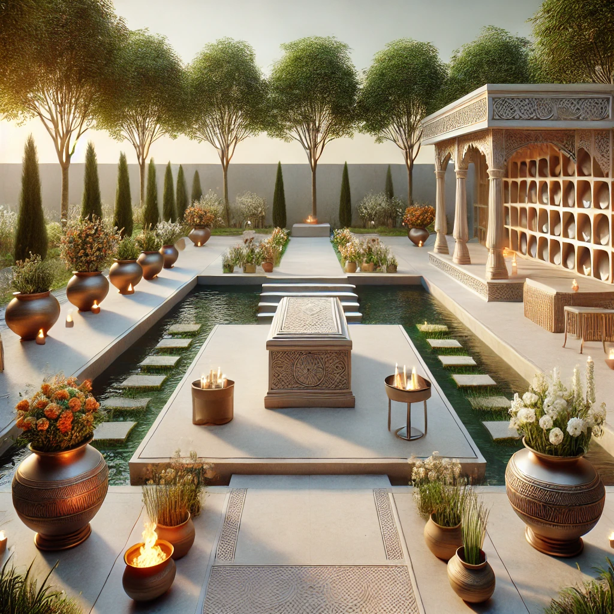

|
As the world’s population continues to rise at an unprecedented rate, one of the most pressing challenges we face is the scarcity of land. This issue is particularly significant when it comes to fulfilling cultural and spiritual traditions, such as the performance of final rituals after a person’s passing. In many societies, these rituals require land, often in the form of burial grounds or cremation spaces, that are already stretched thin due to rapid population growth. As more people are born and the global population swells, the land that was once sufficient to accommodate these ceremonies becomes insufficient. br The lack of available space for final rituals not only disrupts cultural practices but also creates emotional distress for families who are unable to honor their loved ones in the traditional manner. In many urban areas, particularly those with high population densities, the competition for land is fierce, leaving very little room for such sacred traditions. This problem is further compounded by the growing demands for land for housing, commercial spaces, and infrastructure, all of which take precedence over the need for ritual spaces. To address this growing issue, it is essential for both urban planners and communities to consider sustainable solutions. Innovations like vertical burial systems, eco-friendly cremation practices, and the allocation of specific spaces for rituals can help alleviate the pressure on land. The rise in population should prompt us to think creatively and responsibly about how we preserve our cultural heritage while ensuring that there is enough space for everyone, both in life and death. Without such proactive measures, the sacred act of honoring the deceased could become an increasingly difficult challenge for future generations. |
 |
|---|